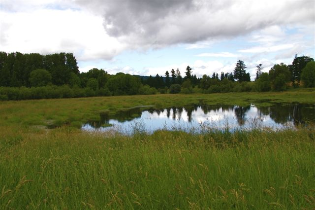

Sauvie's Island
Wapato Greenway Loop
This loop trail, a great family stroll, leads around a seasonal lake along the Multnomah Channel and under tall cottonwoods. The area is part of the Wapato Access Greenway State Park, which absolves you of the need for a Sauvie Island Wildlife Area parking permit. Waterfowl congregate on the lake and you will almost certainly see signs of beaver activity. Bring binoculars!
Plan Your Trip
Trail Aspects:
- Exertion: Easy, 2.2 miles round trip
- Sights: Wildlife such as birds and beavers.
- Popularity: High
- Open: All Year
Directions From Portland:
- Travel Time: approximately 20 minues (13 Miles from Portland)
- Get on I-405 N. Follow I-84 E/U.S. 30 E and I-205 S to Clackamas County. Take exit 14 from I-205 S
- Follow U.S. 30 W to NW Sauvie Island Rd/NW Sauvie Island Bridge
- Turn right onto NW Sauvie Island Rd/NW Sauvie Island Bridge
